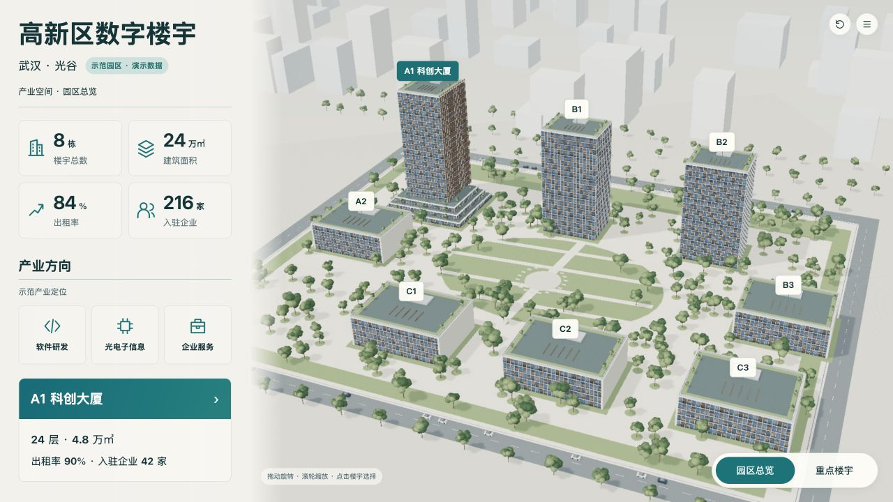
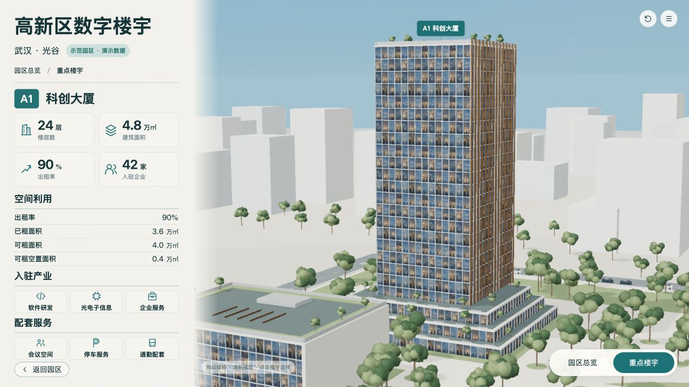

锁定B-campus-v2与B-building-v2r1，不裁切、不拉伸基准；演示快照A1、巡览关闭，固定该版制作相机。新旧版本图片保留。
两图保留原始比例，AI图不具备测绘精度；对照不把AI不可数细节当作工程数据。浏览器截图是实际WebGL画面。



| ID | 预期 | 实际 | 原因假设 | 源修改 | 重建/复验证据 | 结果 | 后续 |
|---|---|---|---|---|---|---|---|
| V-08 | 园区后排A1与前排相对位置接近确认图 | A1移向左后排，前排改为错位排布；八栋均可见 | 原制作坐标并非对AI真实空间的唯一解 | 唯一规划源geometryById及两个相机；稳定ID与24层定义未变 | production-spec-v9-composition.md；campus-detailed-v8r2.jpg → campus-detailed-v9.jpg | 主要构图偏移已修正；不宣称像素级拟合 | 继续使用当前基准，不改图 |
| V-06 | 自然景观与建筑细节具有展陈真实感 | 树冠、道路家具和远景仍比AI图简化；幕墙贴图有可见重复 | 脚本化实时资产的细节规模、固定贴图和简化背景 | 已增加13簇树冠、屋顶种植栏杆及幕墙图集；未以辉光遮盖结构差异 | campus-detailed-v9.jpg；building-detailed-v9.jpg | 保留视觉差异；未登记为最终视觉验收通过 | 若继续做照片级细化，应改用透明叶簇资产、增加街景设施和局部反射，逐项做局部对照 |
| P-01 | 两层复用同一A1实体、三级裙房、总24层 | 同一GLB切镜头，3层裙房+21层塔楼；真实顶点验证22道塔楼横梁 | 由同一规划驱动生成 | 同源规格、稳定根节点与锚点，未复制第二套近景模型 | assets-contract-v9.json；两层实际网页截图 | 结构检查通过，非BIM测绘或AI楼层肉眼计数 | 浏览器绑定和最终重建另行核对 |
[
{
"level": "campus",
"baseline": "design/concepts/B-campus-v2.png",
"baselineSha256": "b7256276a9357e0255ac1799e189de000f3c69563e0672624b826acfb76db264",
"actual": "checks/campus-detailed-v9.jpg",
"actualSha256": "ebd81fb0ead3eb003f4cb5b38bc753785435c75d8e10e0abe4d4765e87b41b9d"
},
{
"level": "building",
"baseline": "design/concepts/B-building-v2r1.png",
"baselineSha256": "1aa5b6d94d1b17ae9b7eb815fa59fa75c1f0f44f88a9f2e41045d85aae8f43e4",
"actual": "checks/building-detailed-v9.jpg",
"actualSha256": "9faca2e0b15d038064fb76fafde40d21826a6eb2e617c192fffaf65bb9d8c3ea"
}
]